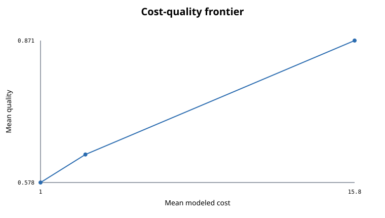
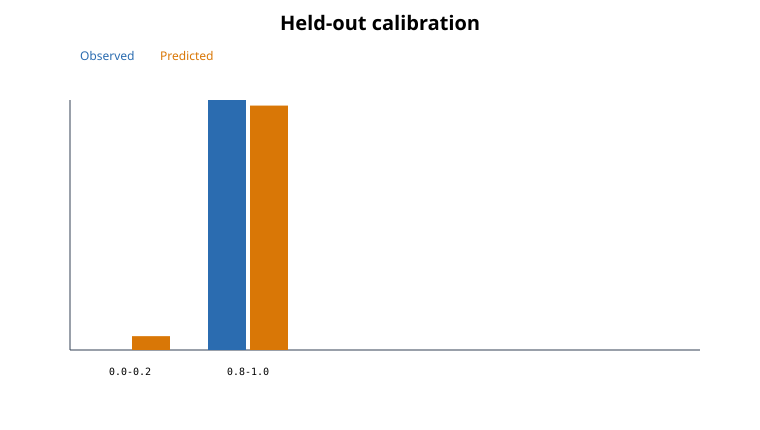

Offline reproducibility receipt
Carno cost-quality benchmark
Status: illustrative_synthetic_smoke. No provider calls. No raw prompts in the report.
Routed mean quality0.8661
Strong-call rate100.0%
Modeled savings0.0%
Quality delta+0.0000
Deployment decision: BLOCKED
The primary policy uses a calibration-only one-sided 95% quality-risk bound. A lower-cost point estimate remains a challenger, not a production claim.
- offline historical proxy does not represent current provider quality or price
- test cohort is below the predeclared 200-row minimum
- distribution-shift warnings require a fresh evaluation
Shift warnings: label_prevalence_shift_train_to_test, small_test_cohort
Held-out policy comparison
| Policy | Quality | Mean cost | Strong calls | Preference accuracy | Savings vs strong |
|---|---|---|---|---|---|
| Routed | 0.8661 | 20 | 100.0% | 77.8% | 0.0% |
| Routed Point Estimate | 0.8706 | 15.77777778 | 77.8% | 100.0% | 21.1% |
| Routed Safety Recall 95 | 0.8706 | 15.77777778 | 77.8% | 100.0% | 21.1% |
| Routed Balanced Accuracy | 0.8706 | 15.77777778 | 77.8% | 100.0% | 21.1% |
| Prompt Length Logistic | 0.8089 | 14.72222222 | 72.2% | 83.3% | 26.4% |
| Always Cheap | 0.5778 | 1 | 0.0% | 22.2% | 95.0% |
| Always Strong | 0.8661 | 20 | 100.0% | 77.8% | 0.0% |
| Deterministic Random Matched Rate | 0.8661 | 20 | 100.0% | 77.8% | 0.0% |
| Oracle Ceiling | 0.8706 | 15.77777778 | 77.8% | 100.0% | 21.1% |


Claim boundary
- All savings are modeled under the exact pinned pricing snapshot.
- Synthetic-fixture results are engineering smoke evidence, not provider performance.
- Offline proxy preference is not absolute model quality and cannot establish production parity.
- Provider latency, historical spend, deployment reliability, and customer adoption are not measured.
- The cohort uses historical model generations and is not evidence about current frontier models.
- No demographic fairness conclusion is supported because protected-attribute labels are absent.
Pricing snapshot: normalized-costs-v1; dataset SHA-256: d7b3e3970718e2a714dc2e36f7f8aa4dcd5fee8b0bb69163cb9abbf93bbbb9f1.